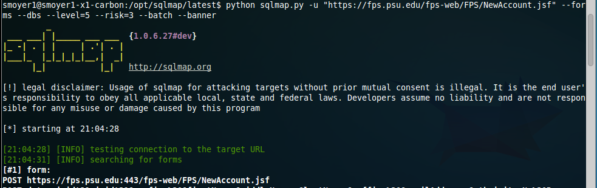
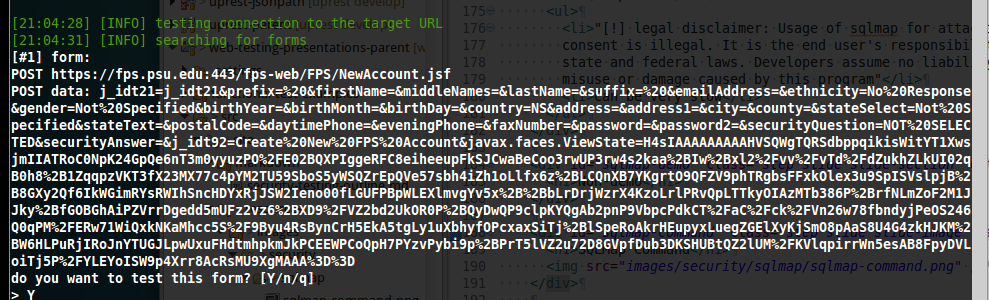
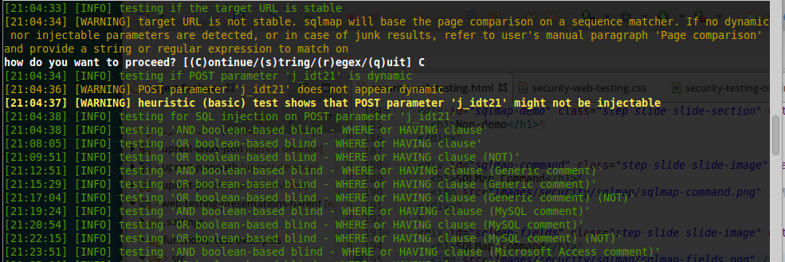
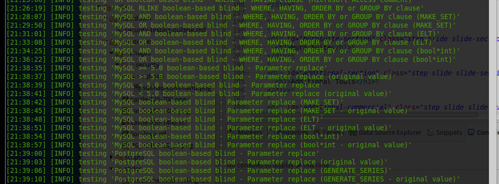
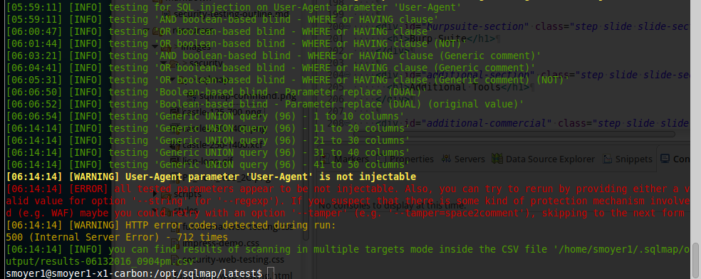

Testing Your New Baby
Security must be built in!
About Me
- Steve Moyer
- Currently - Enterprise Software Architect - AIS/ITS/PSU
- Past - CTO, Start-up founder, Principal Systems Architect
- Happily married with four kids
About You
Automated testing?
- Functional tests?
- Security?
- Performance/Load?
- Accessibility?
About You
Process
- Agile development?
- Waterfall?
- BDUF?
About You
Tools
- Continuous Integration?
- Continuous Testing?
- Continuous Deployment?
- Code Quality Analysis
Penn State's AIS Work-flow
- Development servers
- Test servers
- Acceptance servers (RC)
- Production (incremental roll-out)
Penn State's AIS - Acceptance Testing
- Functional testing (Selenium2)
- Security testing (OWASP/SQLMap)
- Performance/Load testing (JUnitPerf/JMeter)
- Accessibility testing (?)
Agenda
- ZED Attack Proxy
- SQLMap
- Burp Suite
OWASP Zed Attack Proxy
ZAProxy Image

SQLMap
SQLMap Features
- Support for many RDBMS databases
- Tries multiple SQL injection techniques
- Database content dumping
- Tests database password strength
- Query parameters or forms
SQLMap Pros
- Highly configurable
- Huge number of functions
- Can also directly test database security
- Free and maintained
SQLMap Cons
- "[!] legal disclaimer: Usage of sqlmap for attacking targets without prior mutual consent is illegal. It is the end user's responsibility to obey all applicable local, state and federal laws. Developers assume no liability and are not responsible for any misuse or damage caused by this program"
- Can be very slow
Non-demo
SQLMap Command
SQLMap Fields
SQLMap Output
SQLMap Output
SQLMap Results
SQLMap Automation
- Launch via shell/console CLI
- Schedule with Cron, AT, PowerShell
- Load configuration options from a file
- Load targets from a file
Burp Suite
Additional Tools
Commercial Tools
Questions
Contact Information
- smoyer@psu.edu
- smoyer64 on GitHub
- swm16@chat.psu.edu (XMPP Chat)